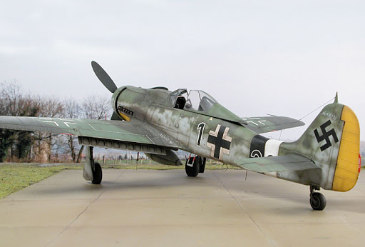
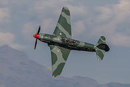

Encuentranos en nuestras redes sociales

En este apartado hablaremos sobre aviones cuyo medio de propulsión eran motores a hélice o turbohélice, ya sean radiales o de pistones. Seran aviones de la segunda guerra mundial principalmente, con algunos que participaron en la guerra de Corea.
| Nombre | Pais | Rol | Armamento | Descripcion | imagen |
| P-51 Mustang | EEUU | Caza-Interceptor | -6x12,7 mm ametralladoras browning | Uno de los cazas mas iconicos de la segunda guerra mundial. Participo principalmente en el teatro del pacífico |  |
| FW-190 D9 Dora | Alemania | Caza-bombardero | -2x20 mm cañones
-2x13 mm ametralladoras Rheinmentall |
Fue un caza aleman de la serie FW190 con capacidad para vuelo a gran altitud, fue el predecesor del Ta-152 |  |
| Yak 9k | URSS | Caza | 1x45 mm cañon OKB-16-45 | Opero de manera restringida a partir de 1943. Disparar el cañon a velocidades bajas era peligroso pero era muy efectivo a altas velocidades en rafagas de 2 o 3 disparos |  |